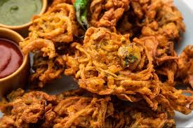

Pakora Recipe

Ingredients
- 1 cup besan (gram flour)
- 1 large potato, thinly sliced
- 1 large onion, thinly sliced
- 1-2 green chilies, finely chopped
- 1 teaspoon cumin seeds
- 1 teaspoon ajwain (carom seeds)
- 1 teaspoon red chili powder
- 1/2 teaspoon turmeric powder
- 1 teaspoon garam masala
- Salt to taste
- Water as needed
- Oil for frying
Instructions
- In a large mixing bowl, combine besan, cumin seeds, ajwain, red chili powder, turmeric powder, garam masala, and salt.
- Add water gradually to make a thick batter. The batter should be thick enough to coat the vegetables.
- Add the sliced potatoes, onions, and green chilies to the batter. Mix well to coat the vegetables with the batter.
- Heat oil in a pan over medium heat for frying.
- Drop spoonfuls of the batter into the hot oil and fry until golden brown and crispy. Avoid overcrowding the pan.
- Remove the pakoras with a slotted spoon and drain on paper towels.
- Serve hot with mint chutney or tamarind chutney.